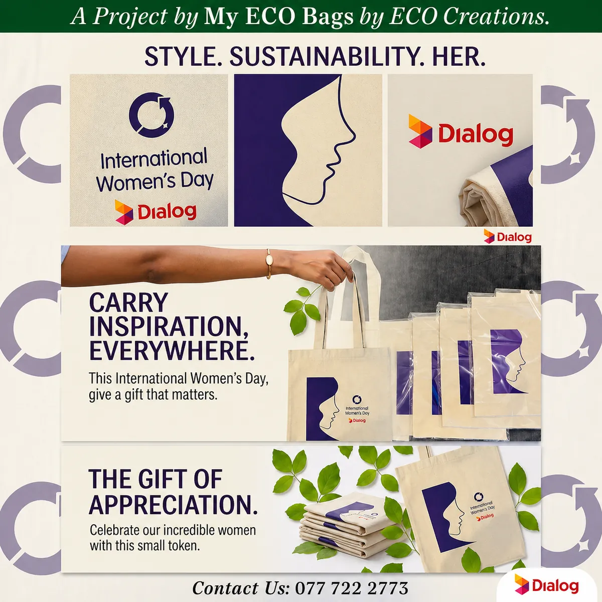
Dialog Women’s Day Eco Bags
Collaborated with Dialog to deliver sustainable, custom-printed eco-friendly tote bags for International Women’s Day.
Custom bag printing, Sri Lanka
Water-based screen printing on 100% natural canvas, jute, calico and non-woven bags. Bulk and custom orders welcome, open 24 hours, with island-wide delivery.
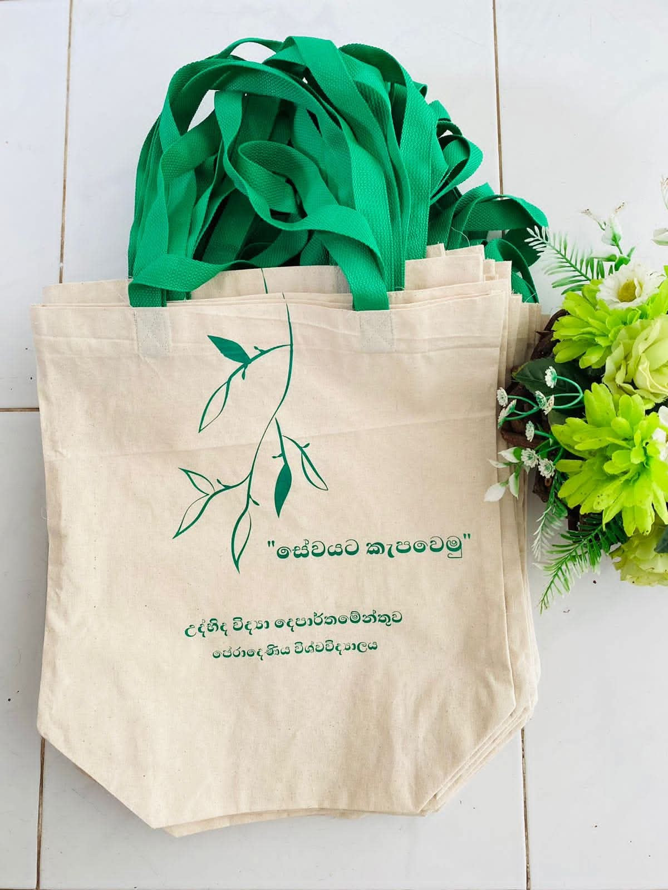
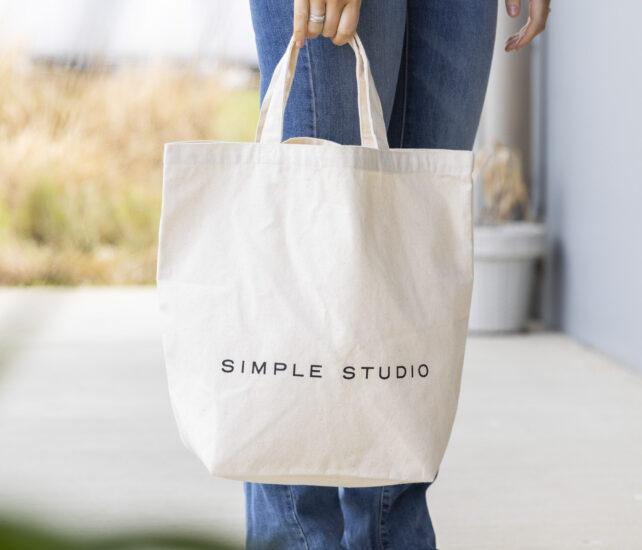
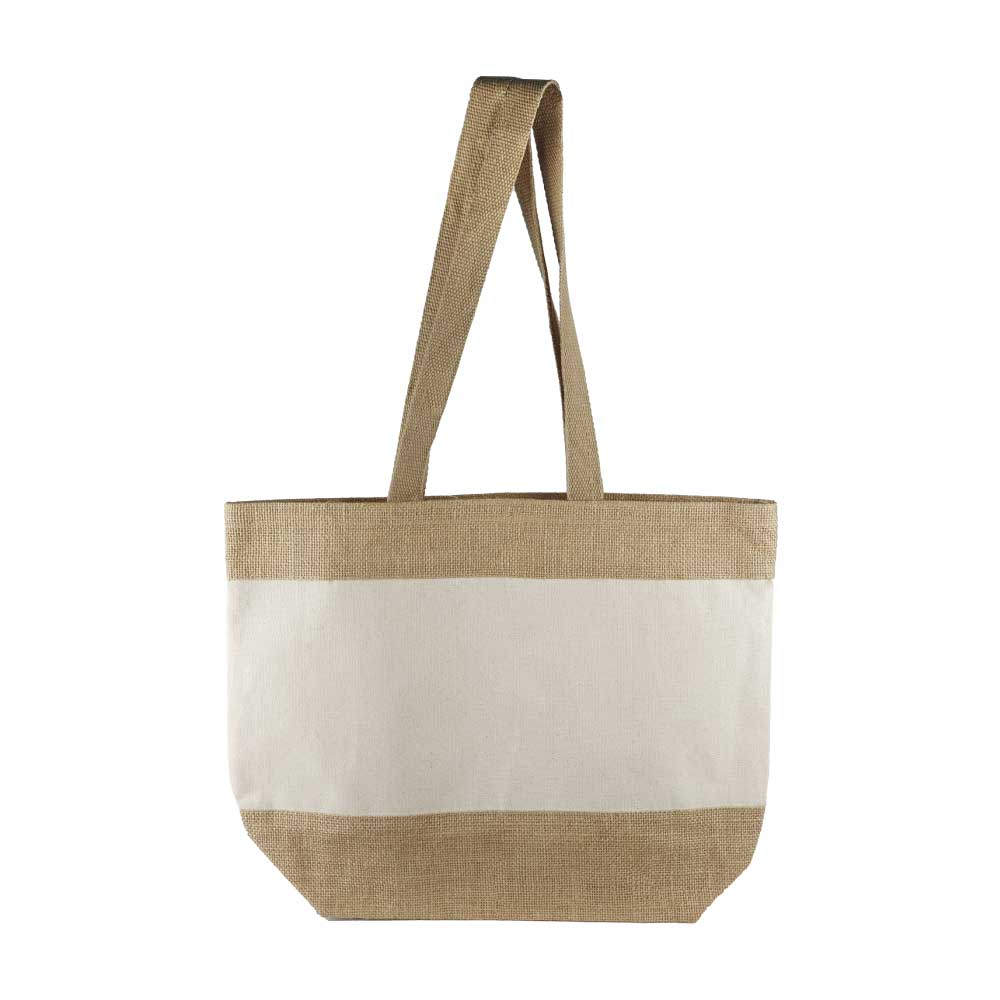
Printed for
Four base materials, one or more print colours, your artwork. Ask us which suits your budget and order size.
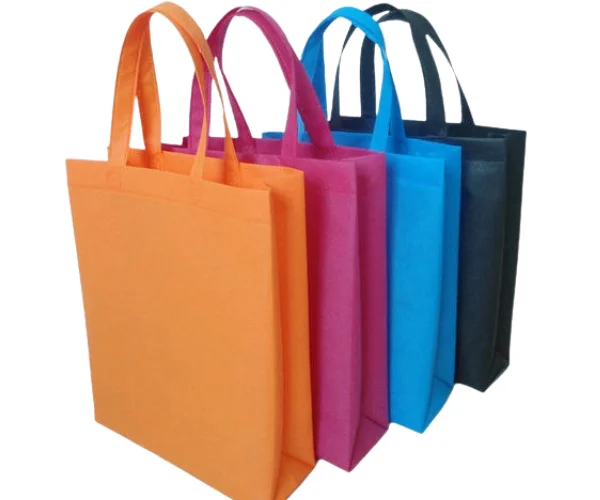
Lightweight, durable and 100% recyclable. Ideal for retail and events.
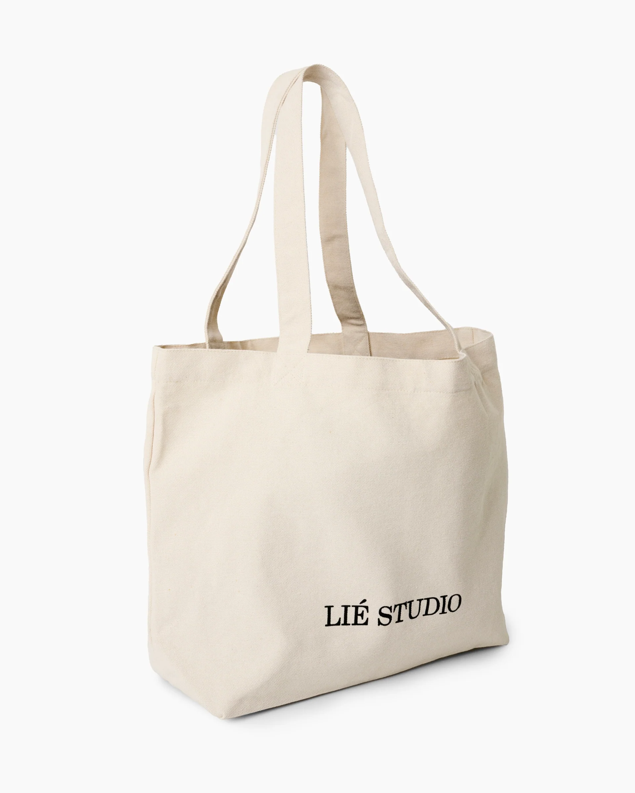
Premium cotton canvas, sturdy and reusable. Multiple GSM options.
Natural fibre, fully biodegradable. Juco adds cotton for durability.
Soft, breathable and unbleached. Great for giveaways and minimalist brands.
Sustainable bag designs made for universities, brands and hotels across Sri Lanka.

Collaborated with Dialog to deliver sustainable, custom-printed eco-friendly tote bags for International Women’s Day.
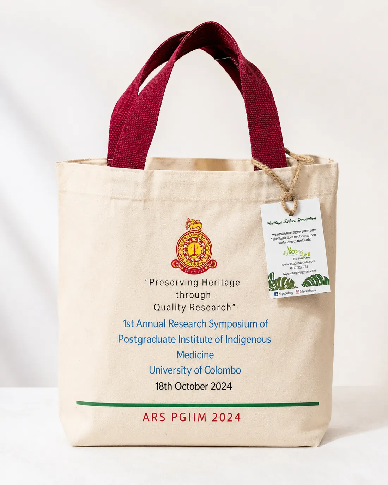
Partnered with University of Colombo’s Postgraduate Institute for their Annual Research Symposium.
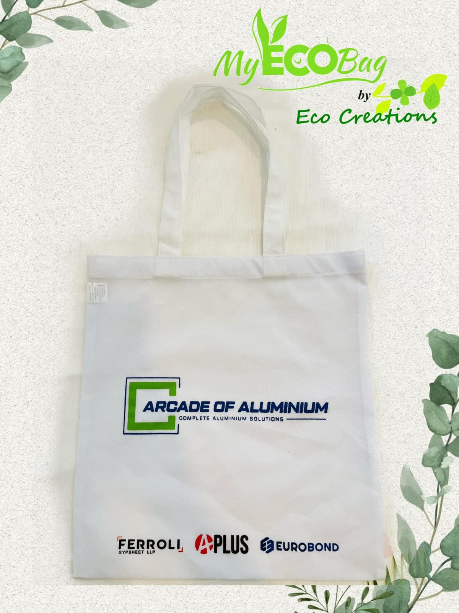
Custom eco-friendly bags for Arcade of Aluminium Pvt Ltd: bold design, reducing plastic waste.
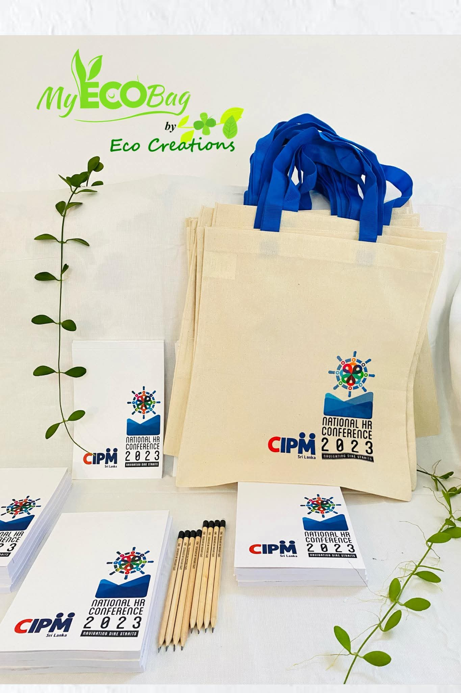
Eco-friendly tote bags, books, and pencils for the National HR Conference 2023.
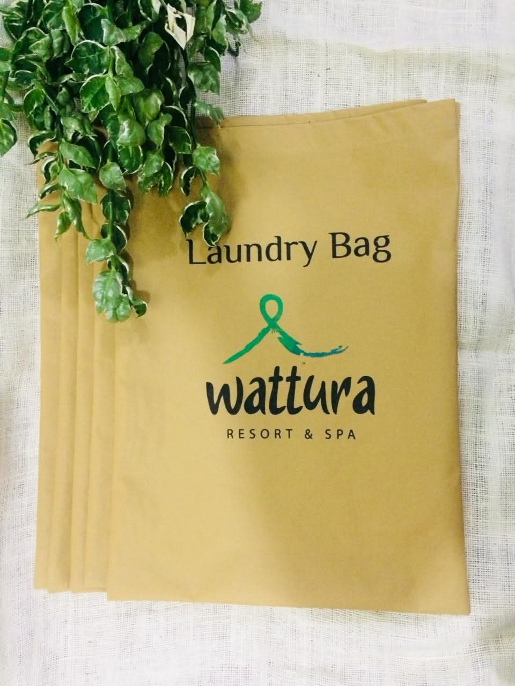
Eco-friendly laundry bags from non-woven, biodegradable materials for a luxury resort.
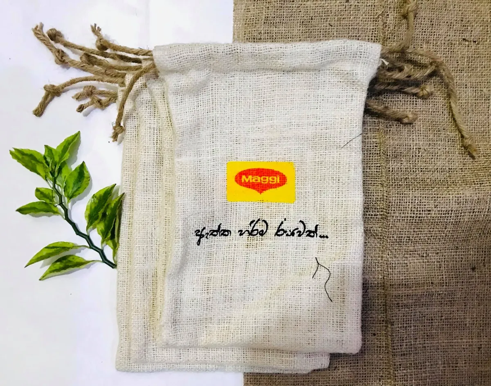
Sustainable, responsibly manufactured promotional bags for a global brand.
We go beyond bags. We’re building a movement of eco-conscious individuals who believe every small choice matters for the planet.
Eco-friendly bags that reduce plastic waste without compromising on style or functionality. Each product supports a cleaner planet.
We encourage mindful habits and provide tools that make sustainable living easy, practical, and part of everyday life.
Join a growing movement of eco-conscious individuals building a future rooted in responsibility and care for the environment.
The world is shifting toward sustainability, and we believe every small step counts. At the heart of our business is a deep commitment to the planet, creating eco-friendly bags that combine style, durability, and environmental responsibility. We envision a future where conscious choices are effortless.
Our goal is to create a lasting positive impact by offering high-quality, eco-friendly bags that promote sustainable living. We are committed to reducing plastic waste through innovative design, responsible materials, and ethical production practices, empowering individuals to make conscious, planet-friendly choices.
“It is our pleasure to partner with Eco Creational to provide these eco-friendly tote bags as a token of appreciation for our ‘Tea and Talk’ farewell party at the Geography Department.”
“It is our pleasure to partner with Eco Creational and receive these eco-friendly tote bags, books, and pencils as a token of appreciation for our National HR Conference.”
You bring the idea, we bring it to life with sustainable materials, personalized design, and a commitment to the planet.
Tell us the bag type, quantity and print colours. Send your logo as a vector file (AI, SVG or PDF) if you have one.
We reply within 24 hours.